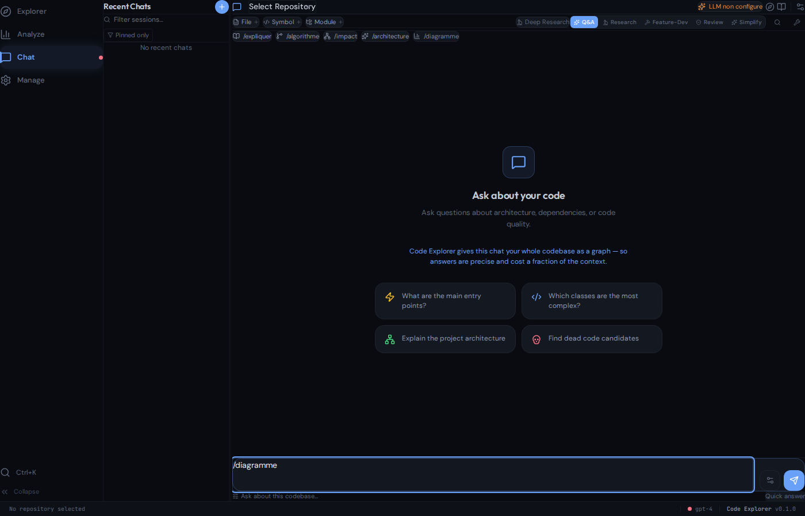

Give Claude Code, Codex, Cursor and any MCP agent a persistent, queryable map of your entire codebase — so they stop re-reading files and start knowing your code.
A Rust engine that turns a repository into a knowledge graph and serves it over MCP. One query answers “what calls this?” or “what breaks if I change this?” in milliseconds — for a fraction of the context.
AI assistants read files one at a time and fill their context window with raw source. Code Explorer pre-indexes the whole codebase into a graph and returns only the relevant relationships — the agent already knows the structure instead of rebuilding it every conversation.
Pre-computed graph: callers, callees, inheritance, impact — no file-reading to discover who calls what.
Thousands of files indexed and queryable in one command. A 42.8M-token repo (Kubernetes) fits in no model — the graph does.
The graph lives on disk and across sessions. 100% local — your code never leaves the machine, no API key to index.
Each row: code-explorer demo <repo> on a hub symbol — the context an agent burns to answer “what’s affected if I change this?”, with vs without Code Explorer. The bigger the codebase, the bigger the win.
| Repo | Lang | Files | 🐌 Without | ⚡ With | Saved |
|---|---|---|---|---|---|
| kubernetes | Go | 17,280 | 3.88M tok | 24K tok | 164× |
| TypeScript | TS | 707 | 821K tok | 12K tok | 67× |
| mastodon | Ruby | 4,055 | 266K tok | 5K tok | 54× |
| whisper.cpp | C++ | 887 | 526K tok | 11K tok | 49× |
| django | Python | 3,031 | 3.04M tok | 79K tok | 39× |
| ollama | Go | 863 | 1.93M tok | 53K tok | 36× |
| tokio | Rust | 781 | 39K tok | 1.3K tok | 29× |
| laravel | PHP | 2,960 | 1.84M tok | 100K tok | 18× |
Tokens ≈ chars/4. “Without” = the files the affected symbols live in (what an agent must read to trace the same impact). Reproduce any row with code-explorer demo <repo>. Full table & method →
# 1. Build (one static binary, ~64 MB) git clone https://github.com/phuetz/code-explorer cd code-explorer cargo build --release -p code-explorer-cli # 2. Index a project, then ask the graph code-explorer analyze /path/to/project code-explorer impact PaymentService code-explorer demo # see the context savings
# Use it with your AI agent (MCP) code-explorer mcp-install # Claude Code # or point any MCP client at: code-explorer mcp # stdio code-explorer serve --http 8080
Works with:
Code Explorer ships a desktop app (Tauri + React) and a web chat. The chat is LLM-powered — bring your own key (Ollama for free/local, or OpenAI · Anthropic · OpenRouter · Gemini). For each question it pulls only the relevant graph context and sends that to the model, so it can interrogate your code and generate documentation precisely and cheaply — Q&A, deep research, feature-dev and review modes.

The same LLM layer powers code-explorer generate docs/wiki/html — turning a repository into a full documentation site grounded in the graph.
Code Explorer is designed and built by Patrice Huetz — developer, software architect, and author — at agile-up.com.
It’s the code-intelligence companion to Code Buddy, the multi-provider AI coding agent: Code Buddy is the hand that writes code, Code Explorer is the brain that knows the codebase. Together, an agent acts on a repo it actually understands.
Patrice also writes books — discover them at patricehuetz.fr.